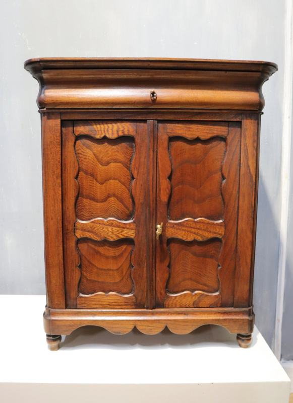
Antiek miniatuurkastje, meesterstukje
€ 450Meer info
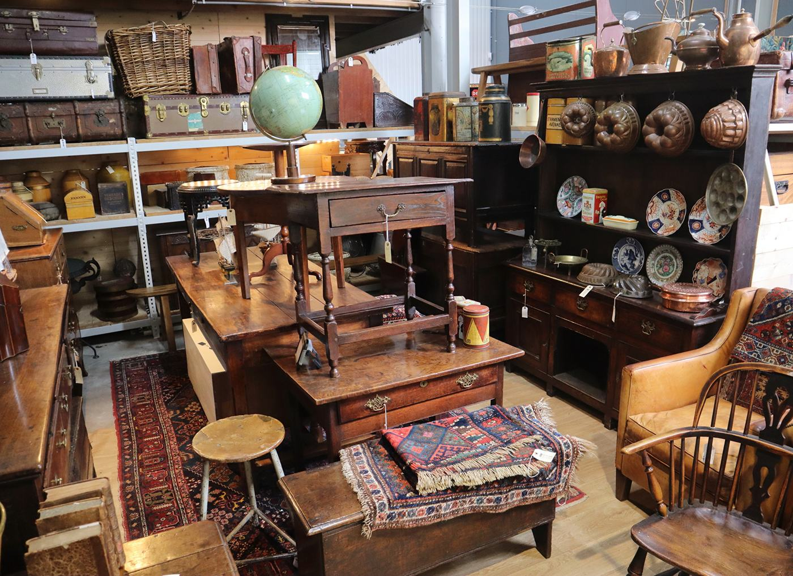
Bij Van Gils Antiek komt zeer regelmatig nieuwe voorraad binnen. Wat er nu niet is, hebben we volgende week misschien wel.
Klik op een stuk voor meer informatie. Komt u voor iets specifieks langs? Informeer dan even of het er nog is.

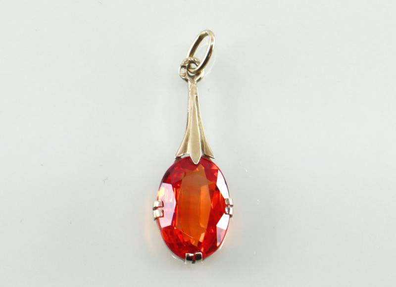
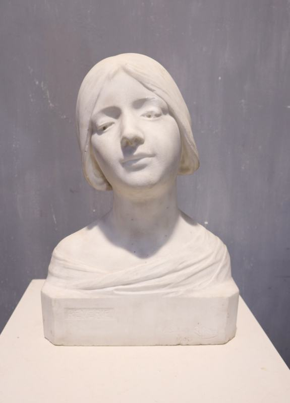
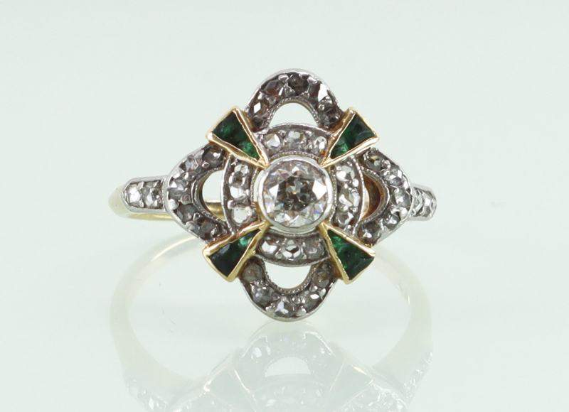
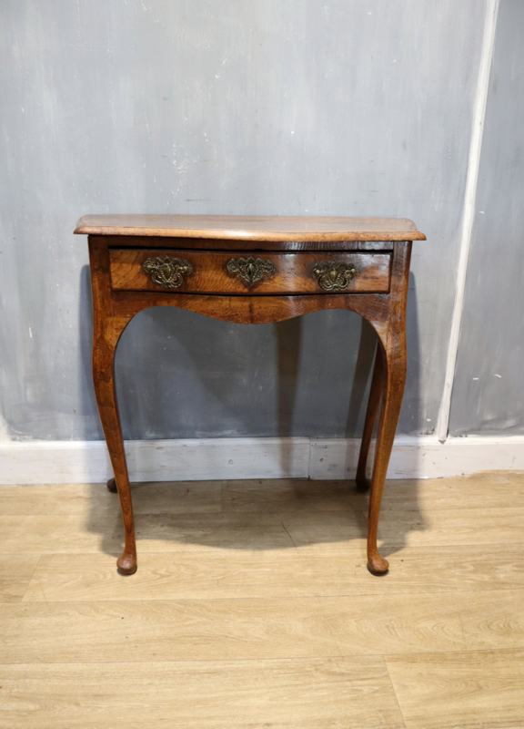
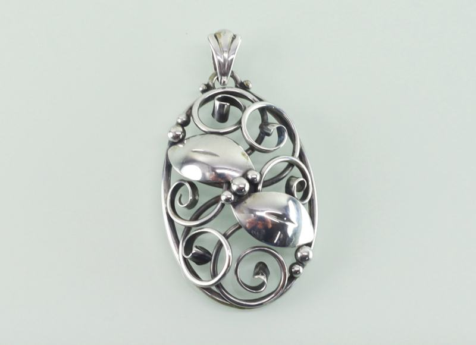
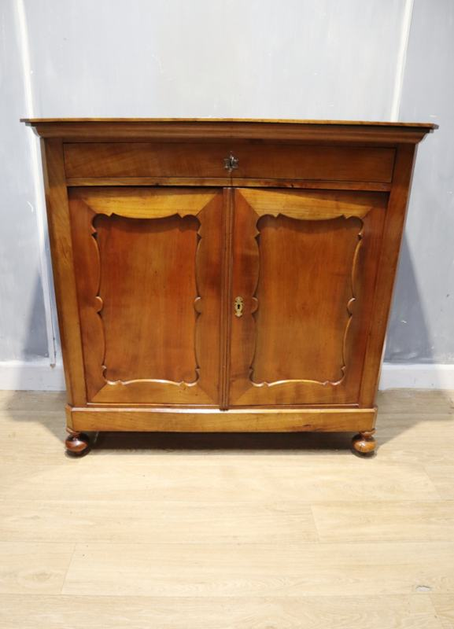
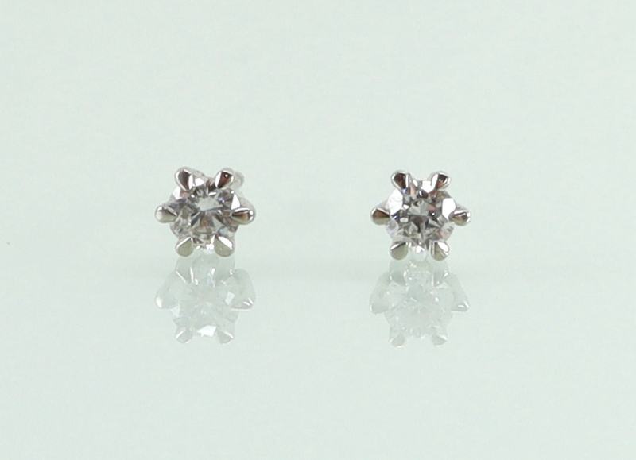
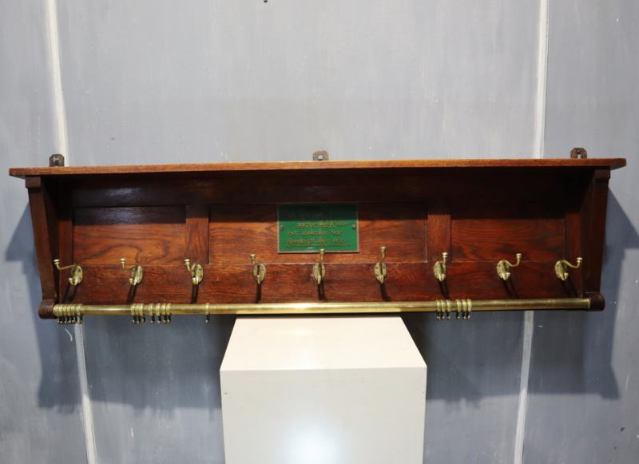
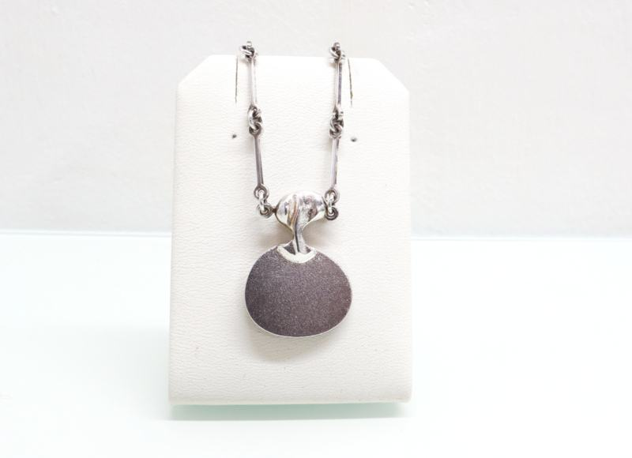
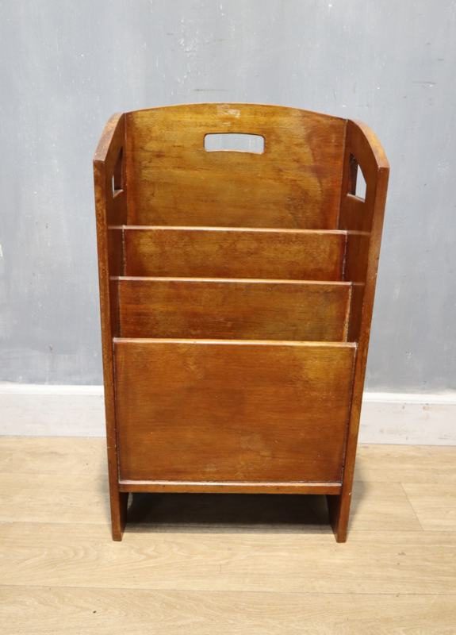
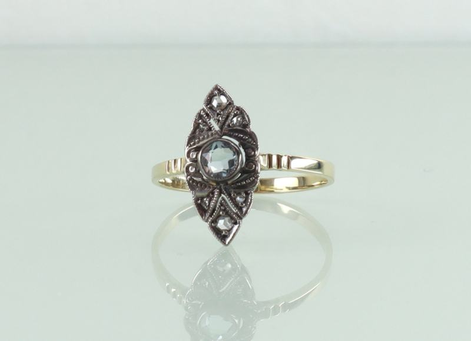
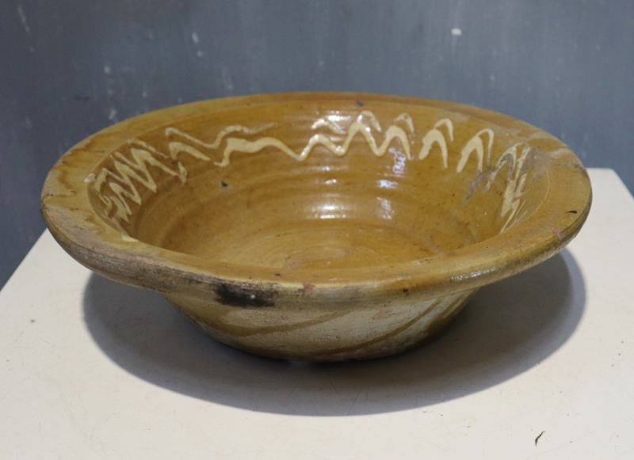
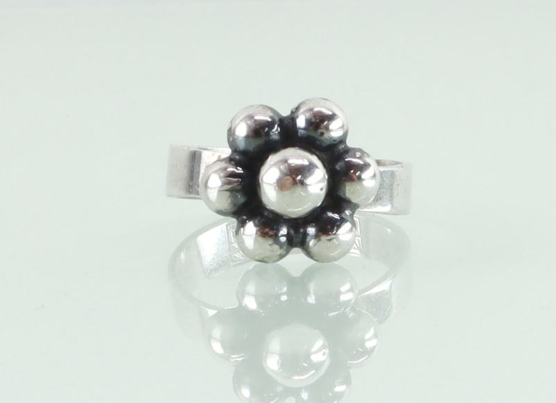
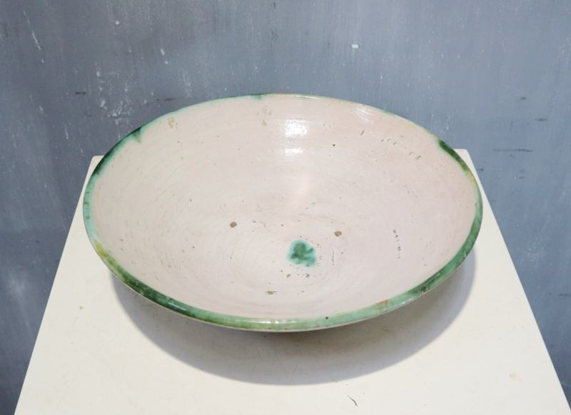
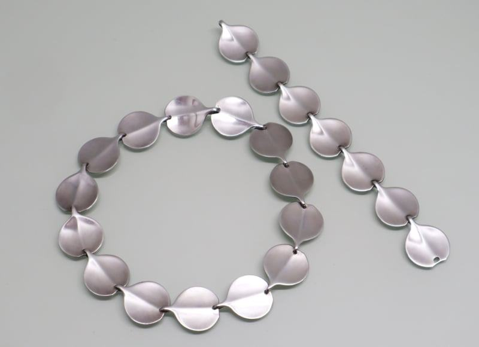
Komt u voor een bepaald stuk? Bel even van tevoren, dan reserveren we het maximaal 2 dagen. Na betaling neemt u het gelijk mee.
Wilt u een stuk komen bekijken of heeft u een vraag over een van onze artikelen? Bel of mail gerust.
We hebben geen vaste openingstijden. Bel voor een afspraak, doordeweeks of in het weekend.
We doen geen taxaties of waardebepalingen en kopen niet in van particulieren.